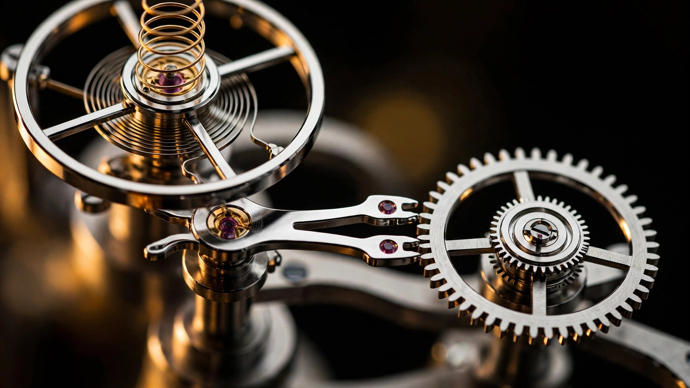

Only the Second Escapement to Dethrone the Swiss Lever in Series Production: Grand Seiko's Caliber 9SA5
More than 200 alternative escapements have been proposed since Thomas Mudge invented the lever in 1754. Only two have made it into mass-produced wristwatches. Grand Seiko's Dual Impulse is the second.

Why Escapements Almost Never Change
An escapement does two things simultaneously. It regulates how fast the mainspring unwinds, converting stored energy into the measured tick of passing time. And it delivers impulses to the balance wheel, the oscillating mass whose rhythm determines accuracy. Every mechanical watch made in the last 270 years has relied on some version of this arrangement, and almost every one of them uses the same design: a Swiss lever with inclined pallet stones, an escape wheel with club-shaped teeth, and an impulse jewel on the balance roller.
Replacing it is almost impossibly difficult. George Daniels, widely considered the greatest watchmaker of the 20th century, codified five essential requirements for a viable wristwatch escapement. It must impulse the balance at both vibrations of each oscillation. It must deliver that impulse tangentially, with minimum friction. After impulse, the balance must swing freely without further contact. And the whole system must self-start from a run-down condition and restart after being accidentally stopped. Meeting all five simultaneously, across millions of cycles, under the shock and vibration of daily wrist wear, is why more than 200 proposed alternatives have failed to displace the lever since 1754.
Daniels himself produced the only successful challenger: the co-axial escapement, which Omega brought to series production in 1999. It required two co-axially mounted escape wheels to deliver both impulses without sliding friction, a complex and costly arrangement that demanded exacting concentricity adjustments during assembly. For 21 years, no other alternative reached the market.
In 2020, Grand Seiko became the second.
A Hybrid of Two Rival Traditions
Watch escapements fall into two broad families. Lever escapements deliver both impulses indirectly, through a pallet fork that rocks back and forth between the escape wheel and the balance. Detent escapements, used in marine chronometers for their superior accuracy, deliver impulse directly from the escape wheel to the balance. Lever types are robust but inefficient, losing energy to sliding friction at every contact surface. Detent types are efficient but fragile, prone to tripping (skipping a beat) when jolted.
Grand Seiko's Dual Impulse Escapement is a hybrid. In one direction, the escape wheel pushes directly against a pallet mounted on the balance roller itself, delivering energy with minimal loss. In the opposite direction, impulse travels the traditional route: escape wheel to pallet fork to impulse jewel. Every oscillation of the balance receives energy, satisfying Daniels' first requirement. And because the system retains the pallet fork's safety function (locking the train between impulses), it restarts reliably after shocks, satisfying requirements four and five.
Crucially, this hybrid approach uses a single escape wheel with only eight teeth. Omega's co-axial needs two co-axial wheels, increasing rotational inertia and manufacturing complexity. Grand Seiko's design achieves comparable efficiency gains with a simpler mechanical layout. One impulse path is friction-free. One still involves sliding contact. Net result: roughly half the friction of a Swiss lever, and half the lubrication dependency.
Semiconductor Lithography at Watch Scale
Making the Dual Impulse work required components no traditional machining process could produce. Both the escape wheel and pallet fork are fabricated using MEMS (micro-electromechanical systems) technology, borrowed from the semiconductor division within the Seiko Group. MEMS lithography etches components from silicon wafers using photochemical processes, achieving dimensional precision to one ten-thousandth of a millimeter. By comparison, traditional CNC machining of watch components operates at tolerances roughly 100 times coarser.
Precision at this scale is not decorative. A high-beat escapement running at 36,000 vibrations per hour means the escape wheel engages and releases 10 times per second, 864,000 times per day. Any asymmetry in tooth profile or pallet geometry introduces rate error that compounds with every cycle. MEMS fabrication ensures each of the eight teeth on the escape wheel and each surface on the pallet fork is geometrically identical to within a fraction of a micron.
MEMS also enables shapes that cannot be machined conventionally. Grand Seiko's pallet fork has intricate skeletonized geometry, its interior material removed to reduce rotational inertia. In a high-beat movement, lower inertia in the escapement means faster acceleration and deceleration at each impulse, allowing the escape wheel to keep pace with the balance. A heavier pallet fork, no matter how accurately shaped, would introduce lag at 10 beats per second. Weight reduction through skeletonization is not a styling choice. It is a functional prerequisite for the frequency this movement operates at.
80,000 Simulations to Shape a Curve
Below the escapement, Caliber 9SA5 introduces Grand Seiko's first free-sprung balance. Previous 9S-series calibers used regulated balances with flat hairsprings, a proven arrangement that Grand Seiko's Shizukuishi watchmakers had spent decades mastering. Switching to a free-sprung configuration required abandoning that accumulated expertise and solving a different set of problems.
A regulated balance adjusts timekeeping by moving a regulator lever that effectively shortens or lengthens the active portion of the hairspring. Simple and serviceable, but the regulator itself introduces a point of contact that can shift under shock, degrading accuracy. A free-sprung balance eliminates the regulator entirely. Rate adjustment happens through four mass screws recessed into the balance wheel's periphery, whose positions alter the wheel's moment of inertia. More stable under shock, harder to adjust during servicing.
Grand Seiko compounded the challenge by pairing this free-sprung balance with a new overcoil hairspring. An overcoil, first devised by Abraham-Louis Breguet in the early 19th century, raises the outermost terminal curve of the hairspring above the plane of the rest of the spiral. Done correctly, it forces the hairspring to breathe concentrically, expanding and contracting symmetrically around its center regardless of amplitude. Without an overcoil, a flat hairspring's center of gravity shifts off-axis at different amplitudes, creating rate variation between high-energy and low-energy states (poor isochronism).
But computing the optimal overcoil shape for the Dual Impulse Escapement was not a matter of copying Breguet's 200-year-old geometry. Every escapement introduces its own characteristic error. A perfect hairspring paired with an imperfect escapement still produces imperfect timekeeping. Grand Seiko needed an overcoil that was deliberately non-isochronous in precisely the right way, so that the hairspring's deviation would cancel the escapement's deviation, leaving the net rate error near zero across all amplitudes and positions.
Finding that shape required running 80,000 computer simulations, each one testing a different terminal curve geometry against the specific friction profile and impulse characteristics of the Dual Impulse Escapement. No existing mathematical formula predicted the result. Grand Seiko arrived at a proprietary curve that differs visibly from both the classic Breguet overcoil and the Phillips terminal curve used in marine chronometers. Combined with a rotatable outer stud that allows watchmakers to fine-tune isochronism without bending the hairspring by hand, this oscillator assembly represents a complete reimagining of Grand Seiko's regulating organ.
A Gear Train That Lies Flat
Power enters Caliber 9SA5 through twin barrels arranged in series, each containing a long, thin mainspring. In a conventional movement, one barrel occupies the largest volume of the caliber and sits beneath overlapping layers of wheels and bridges. Grand Seiko's engineers rearranged the entire train.
Instead of stacking wheels vertically above the barrel, Caliber 9SA5 spreads them horizontally. Five wheels replace the traditional three, each one smaller and thinner, distributing the mechanical load across more contact points. Smaller wheels mean shallower teeth, and shallower teeth mean thinner bridges. With the barrel driving a tiny second wheel positioned laterally rather than concentrically, and the fourth wheel centered to drive the seconds hand directly, the motion works require no additional intermediate gearing on the dial side. Every millimeter saved vertically contributes to the 15 percent height reduction over its predecessor, the Caliber 9S85. At just 5.18 mm tall, Caliber 9SA5 accommodates twin barrels, 47 jewels, an overcoil hairspring, and an instantaneous date mechanism in a package slimmer than most single-barrel movements.
Distributing the train across five wheels also has a less obvious benefit. In a three-wheel train, the escape wheel must carry enough teeth to achieve the desired beat rate. More teeth mean a larger escape wheel, which increases rotational inertia. With five wheels handling the gear reduction, Grand Seiko could use an escape wheel with only eight teeth, keeping it small and light enough to cycle at 10 beats per second without requiring an unreasonably strong mainspring. This is the hidden logic connecting the gear train to the escapement to the power reserve: each subsystem was designed to relieve load from the others.
What This Actually Means on the Wrist
Paper specifications are seductive. Eighty hours of power reserve at 36,000 vibrations per hour, with a precision rate of +5 to -3 seconds per day. Those numbers matter, but what they describe in practice is less dramatic and more quietly useful.
A high-beat movement averages out positional disturbances more effectively than a low-beat one. At 10 beats per second, each individual oscillation has less opportunity to be disrupted by a wrist flick or a sudden impact. Statistical averaging smooths the rate. Combined with the free-sprung balance's immunity to regulator shift and the overcoil's isochronism correction, Caliber 9SA5 should maintain its rate more consistently across a full day of varied activity than any previous Grand Seiko mechanical caliber.
Eighty hours of power reserve means wearing the watch on Friday afternoon and picking it up Monday morning to find it still running, still accurate. For a rotating collection, this is a genuine convenience gain. For a daily wearer, it means the movement rarely operates in the low-amplitude, low-accuracy zone that plagues shorter reserves.
Perhaps more significant in the long run: the Dual Impulse Escapement's reduced friction halves the lubrication burden compared to a Swiss lever. Watch oils degrade over time, and their degradation is the primary reason mechanical watches require periodic servicing, typically every five to seven years. Less friction means less oil, which means slower degradation, which potentially extends service intervals. Grand Seiko has not made a specific claim about longer service cycles, but the physics of the system points in that direction.
Context Among Competitors
Caliber 9SA5 does not exist in isolation. Omega's co-axial escapement remains the only other non-lever alternative in series production, and Omega has refined it across three generations since 1999. Rolex's Syloxi and Parachrom hairsprings, though paired with traditional lever escapements, represent massive investments in silicon and paramagnetic alloy technology that push the lever's performance closer to its theoretical limits. Patek Philippe's Caliber 30-255 PS set a new standard for hand-wound movements with its own innovations in barrel and gear train design.
Against this field, Grand Seiko's contribution is distinctive in two ways. First, it achieves escapement-level innovation with lower mechanical complexity than the co-axial. One escape wheel instead of two. No need for co-axial concentricity adjustment. A simpler assembly that is more amenable to efficient production and consistent quality. Second, it treats the escapement as one element in an integrated architecture rather than an isolated upgrade. Every major subsystem, from the barrels to the gear train to the balance and overcoil, was redesigned simultaneously to work with the Dual Impulse's specific characteristics. Caliber 9SA5 is not an existing movement with a new escapement bolted in. It is a movement conceived around its escapement.
Revolution Watch's assessment captures the scope of the achievement: Caliber 9SA5 "establishes for automatic movements what the Patek Philippe Caliber 30-255 PS did for hand-wound movements." Independent watchmaker Reuben Schoots put it more bluntly. Grand Seiko, he wrote, "have made a statement that will solidify them in history as one of the first major watch brands to design and manufacture an escapement in-house that offers superior performance over the lever."
What It Does Not Solve
Honesty demands noting what the Dual Impulse does not achieve. One of its two impulse paths still relies on sliding contact between the escape wheel and pallet fork, just as in a Swiss lever. That contact still requires lubrication. As an independent analysis by Reuben Schoots observed, the escapement "will suffer from (albeit to a lesser extent, as this sliding friction has now effectively been halved) the same erratic timekeeping as observed with the lever escapement, as the lubrication deteriorates." Daniels' second requirement, impulse delivered tangentially with minimum friction, has been addressed but not fully solved.
Omega's co-axial, by contrast, operates entirely without sliding friction in either impulse path. Its lubrication independence is more complete. Grand Seiko traded absolute friction elimination for mechanical simplicity, and that trade-off is reasonable for a mass-produced movement, but it is a trade-off nonetheless.
Additionally, the free-sprung balance with its overcoil is more demanding to adjust during servicing than Grand Seiko's traditional regulated balances. Shizukuishi's watchmakers spent decades accumulating expertise in flat-hairspring regulation, and that institutional knowledge does not transfer directly to the new system. Service complexity will decrease as Grand Seiko's authorized service network gains experience with the caliber, but the learning curve is real.
| Specification | Caliber 9SA5 | Caliber 9S85 (predecessor) |
|---|---|---|
| Beat rate | 36,000 vph (10 beats/sec) | 36,000 vph (10 beats/sec) |
| Power reserve | 80 hours | 55 hours |
| Precision rate (static) | +5 to -3 sec/day | +5 to -3 sec/day |
| Movement height | 5.18 mm | 5.89 mm (-15%) |
| Jewels | 47 | 37 |
| Escapement | Dual Impulse (MEMS) | Swiss lever |
| Balance type | Free-sprung, overcoil | Regulated, flat hairspring |
| Barrels | Twin (series) | Single |
| Gear train layout | Horizontal (5 wheels) | Conventional (3 wheels) |
| Date change | Instantaneous | Semi-instantaneous |
| Development period | 9 years | Iterative from 9S5x series |
Sources
- Grand Seiko. "Caliber 9SA5." Official technical documentation. grand-seiko.com.
- Grand Seiko. "Chapter 13: The Dual Impulse Escapement." The 25th Anniversary of the 9S Mechanical Calibers. grand-seiko.com.
- Grand Seiko. "A High Beat Caliber Opens a New Chapter in the History of Grand Seiko." Press release, March 2020.
- Revolution Watch. "A Deep Dive into the Grand Seiko Caliber 9SA5." revolutionwatch.com, 2022.
- Schoots, Reuben. "An Independent Watchmaker Explains Why the New Grand Seiko 9SA5 Caliber Is So Remarkable." Time and Tide Watches, November 2020.
- GS9 Club. "Introducing the Hi-Beat 36000 9SA5 Series 9 'White Birch' SLGH005." grandseikogs9club.com, December 2021.
- Time and Tide Watches. "IN-DEPTH: Grand Seiko Movements, Part I, the Mechanicals." timeandtidewatches.com, 2021.
- Daniels, George. Watchmaking. Philip Wilson Publishers, 1981. (Essential requirements of a watch escapement, pp. 230-232.)